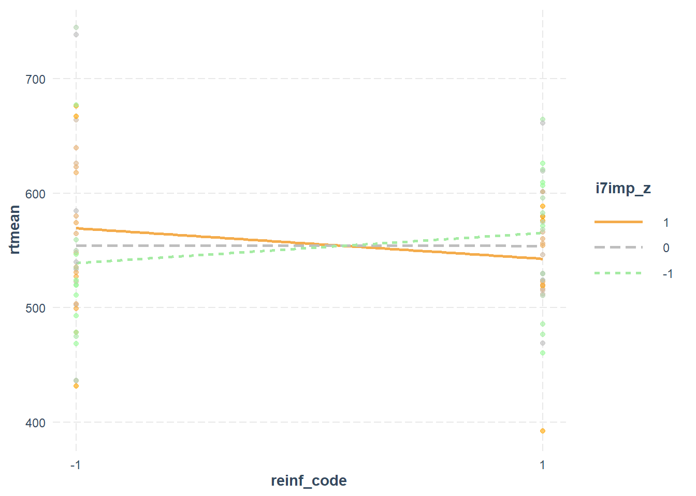
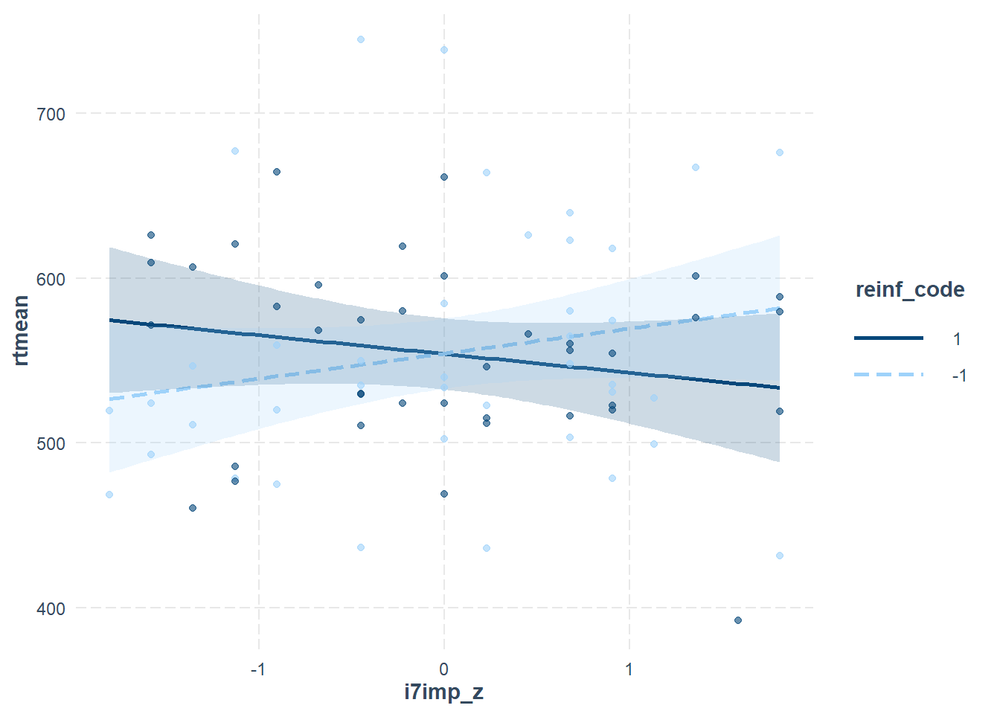

df <- read.csv("reinforcement_personality_data.csv")PS71020_Unit5_Lab
Regression 2
Learning Outcomes:
1 - Use RStudio to carry out simple linear regressions that include categorical, as well as continuous, predictors
2 - Understand how dummy coding works for categorical predictors in regression
3 - Carry out regression with a moderator (interaction) term in various ways
4 - Enter predictors hierarchically in regression models
Materials Used:
We will use the packages interactions and knitr these are already installed on the RStudio Server but if you are working on your own Laptop you may need to install them.
NoteSome general notes about the weekly labs
You should go through the worksheet during the lab and try to complete as much of it during the lab as you can. You can work on the sheet individually or in small groups during the lab. Try to answer the lab worksheet questions in your own words however. If you are unable to finish the worksheet during the class, try to finish it outside class time. Try to attempt the answer before using the ‘Show Answer’ button.
As you go through the sheet, copy the relevant lines of code to your own analysis script.
A complete model answers script will be available on the VLE page from Fridays after the labs so you can check your own answers.
If you have any queries during the class, please feel free to ask your lab tutors. If your question relates specifically to the lecture content or the homework sheets, please contact Peter Holland by email or use the forum on the VLE page.*
CREATE A NEW PROJECT
Just as we did in previous weeks we are going to start by creating a new project for this week’s lab. Download the data from the VLE (In the Week 5 Lab Materials section) and then copy it in the folder you created your project in. You can also find a direct download link for the data here: Github Link.
If you are working on the RStudio Server, then you will need to download the file to your computer and then upload it to the correct folder on the server.
Also create a new script in this folder so you can copy the lines of code needed to run this analysis yourself using just that script.
SECTION A. THE DATASET
The dataset (reinforcement_personality_data.csv) involves reaction time (RT) data from a vigilance task that will be related to personality variables (impulsivity, extraversion) using regression. Participants are tested in one of 3 reinforcement conditions and the condition is predicted to affect how personality is related to task performance.
Experiment Summary • Tested 108 healthy participants carrying out a vigilance task
• Main DV is mean RT for each participant (variable = rtmean)
• Each participant randomly assigned to 1 of 3 conditions:
Control: Simple task feedback, no financial reinforcement
Reward: Win money for correct target detection
Punishment: Lose money for false positives (responding “target” when there was no target)
Variables • Reinforcement condition is recorded as reinf with:
reward = 1
punishment = 2
control = 3
• Two main personality variables:
Extraversion (epqe)
Impulsivity (i7imp)
Predictions • Gray’s theory Wikipedia article predicts that extraverted and/or impulsive participants should respond more rapidly than introverted / non impulsive subjects, especially under conditions of reward. The DV (rtmean) is our main index of response speed. Of course, fast responses mean small RTs! This effect of extraversion / impulsivity should thus be weaker, or even possibly reversed, in non-reinforced (control) or punishment conditions.
First we need to load the data as usual.
Set up variables as factors (reinf has been left unchanged for now on purpose)
df$extgp = factor(df$extgp, levels = c(1,2), labels = c("Extravert", "Introvert"))
df$sex = factor(df$sex, levels = c(1,2), labels = c("Female", "Male"))
df$inpaper = factor(df$inpaper, levels = c(0,1,2), labels = c("Excluded-middling E value","Include","Excluded-P outlier"))Before doing any analyses on the data we must exclude 4 participants (for various reasons). This is coded by the inpaper variable and we want to keep only those who have a value of 1 (label of Include).
Notice below that we have to use the “Include” not the original numeric value of 1.
In R, a factor’s levels are the underlying category values (levels(f)). The labels are the names assigned to those levels when the factor is created, via the labels = argument of factor(). Once the factor exists, the labels are the levels. R keeps no separate label layer, so you subset using whatever levels() shows you.
levels(df$inpaper)[1] "Excluded-middling E value" "Include"
[3] "Excluded-P outlier" dfTrim <- subset(df,df$inpaper=="Include")SECTION C. REGRESSION WITH CATEGORICAL VARIABLES
One of the advantages of using the factor() function to correctly set up our categorical variables is that when we use lm() it treats it properly as a categorical variable. If we simply leave it as numeric and fit a model then the regression will treat it as continuous and fits a single slope, which is almost certainly not what we want.
myFormula <- rtmean ~ reinf
mdlC <- lm(myFormula,dfTrim)
summary(mdlC)
Call:
lm(formula = myFormula, data = dfTrim)
Residuals:
Min 1Q Median 3Q Max
-158.81 -38.83 -10.31 36.60 183.47
Coefficients:
Estimate Std. Error t value Pr(>|t|)
(Intercept) 540.260 16.527 32.689 <2e-16 ***
reinf 10.554 8.008 1.318 0.19
---
Signif. codes: 0 '***' 0.001 '**' 0.01 '*' 0.05 '.' 0.1 ' ' 1
Residual standard error: 65.59 on 106 degrees of freedom
Multiple R-squared: 0.01612, Adjusted R-squared: 0.00684
F-statistic: 1.737 on 1 and 106 DF, p-value: 0.1904If we instead convert it to a factor first:
dfTrim$reinf = factor(dfTrim$reinf, levels = c(1,2,3), labels = c("Reward","Punishment","Control"))And then run our linear regression with exactly the same formula we can see that we now get different F and p values and also our Coefficients table contains two lines instead of one.
mdlF <- lm(myFormula,dfTrim)
summary(mdlF)
Call:
lm(formula = myFormula, data = dfTrim)
Residuals:
Min 1Q Median 3Q Max
-162.30 -38.38 -8.10 32.21 190.27
Coefficients:
Estimate Std. Error t value Pr(>|t|)
(Intercept) 554.3034 10.5176 52.703 <2e-16 ***
reinfPunishment 0.2591 14.7808 0.018 0.986
reinfControl 22.3115 16.1054 1.385 0.169
---
Signif. codes: 0 '***' 0.001 '**' 0.01 '*' 0.05 '.' 0.1 ' ' 1
Residual standard error: 65.68 on 105 degrees of freedom
Multiple R-squared: 0.02252, Adjusted R-squared: 0.003904
F-statistic: 1.21 on 2 and 105 DF, p-value: 0.3024When using a categorical variable with more than two levels, the variable is recoded into pairs of other variables that allow meaningful regression analysis. Here a common coding scheme has been used , this is typically referred to as dummy coding. The variable reinf has been “dummy coded” into 2 new variables.
A factor with k levels gives k - 1 dummy variables. Thus, the 3 levels of reinf requires 2 dummy-coded variables. One level of the original variable is assigned a value of 0 in all of the dummy coded variables, and this level will act as the reference (Reward in this case). In each of the dummy coded variables, a value of 1 is assigned to one of the other levels of the original variable; this is the level which is compared against the reference level.
To understand how this has been set up we can use the following code:
contrasts(dfTrim$reinf) Punishment Control
Reward 0 0
Punishment 1 0
Control 0 1The regression output above will therefore have an intercept plus one coefficient per non-reference level:
(Intercept): the mean of the reference group (Reward, the first level)
reinfPunishment: the difference between Punishment and Reward
reinfControl: the difference between Control and Reward
The reference level is the first level of the factor. We can see this is “Reward” in this case if we use the code:
levels(dfTrim$reinf)[1] "Reward" "Punishment" "Control" The dummy coding scheme is usually used in situations for which one level of the categorical variable is a natural “reference” or comparison/control level. This is thus a good coding scheme to use in the current study. However, in this case “Reward” isn’t the most sensible reference level, instead we probably want to use “Control” as the reference level and then analyse the differences from this level.
To change the reference level of a factor variable:
dfTrim$reinf <- relevel(dfTrim$reinf, ref = "Control")If we now rerun the regression, we can see that the the two coefficients now represent the difference from the new reference level “Control”.
mdlF2 <- lm(myFormula,dfTrim)
summary(mdlF2)
Call:
lm(formula = myFormula, data = dfTrim)
Residuals:
Min 1Q Median 3Q Max
-162.30 -38.38 -8.10 32.21 190.27
Coefficients:
Estimate Std. Error t value Pr(>|t|)
(Intercept) 576.61 12.20 47.276 <2e-16 ***
reinfReward -22.31 16.11 -1.385 0.169
reinfPunishment -22.05 16.02 -1.377 0.172
---
Signif. codes: 0 '***' 0.001 '**' 0.01 '*' 0.05 '.' 0.1 ' ' 1
Residual standard error: 65.68 on 105 degrees of freedom
Multiple R-squared: 0.02252, Adjusted R-squared: 0.003904
F-statistic: 1.21 on 2 and 105 DF, p-value: 0.3024If we inspect the means of the rtmean variable we can see:
1 - The estimate for the intercept row of the coefficients table is equal to the mean of rtmean in the “Control” condition.
2 - The estimate for the reinfReward row = The Reward group mean - the Control group mean
3 - The estimate for the reinfPunishment row = The Punishment group mean - the Control group mean
by(dfTrim$rtmean,dfTrim$reinf,mean)dfTrim$reinf: Control
[1] 576.6149
------------------------------------------------------------
dfTrim$reinf: Reward
[1] 554.3034
------------------------------------------------------------
dfTrim$reinf: Punishment
[1] 554.5625Note: With a two-level factor, the dummy coding is equivalent to a 0/1 variable, so you can use either a factor or a numeric 0/1 variable and get the same result.
Think about the regression equation, why in this case with a single dummy coded predictor do we see these coefficients as simply the difference between group means?
A categorical predictor with three levels is represented by two dummy variables, X1 and X2, each coded 0 or 1. The equation is Ŷ = b0 + b1X1 + b2X2, and it can only produce three predicted values, one per group:
Reference group (X1 = 0, X2 = 0): Ŷ = b0 Group 1 (X1 = 1, X2 = 0): Ŷ = b0 + b1, so b1 = Ŷ1 − b0 Group 2 (X1 = 0, X2 = 1): Ŷ = b0 + b2, so b2 = Ŷ2 − b0
Least squares regression sets each group’s predicted value to that group’s mean (the mean minimises squared error within the group), and with three parameters for three groups the model can do this exactly. Therefore b0 is the reference group mean, b1 is the difference between Group 1 and the reference group, and b2 is the difference between Group 2 and the reference group.
Notice that the coefficients compare each group to the reference only. The difference between Group 1 and Group 2 is b1 − b2, which doesn’t appear directly in the output.
For the regression above with the automatically dummy coded predictor was the overall model significant?
No, the F-test shows R2=0.0225, F(2,105) = 1.210, p = .302. (Note: usually in APA style, R2, F and t values are reported to 2 decimal places [except when convention dictates using 3 decimal places when p < .10] but I have left all 3 here, and various other places, for comparison later.)
Did either, both or neither of the reinforcement conditions make an independent significant contribution to the prediction of task RT?
Neither. From the Coefficients table: For Reward , t = -1.39, p = .169 For Punishment, t = -1.38, p = .172.
NOTE: Other coding schemes are available such as effect (sum-to-zero) coding: With this coding, the intercept becomes the grand mean and the coefficients are deviations from it. This is worth knowing if you’re mixing categorical predictors with interactions, where the coding changes the interpretation of the other terms.
SECTION C. MODERATION ANALYSIS
So far, these analyses have just analysed the overall effect of reinforcement on RT. And basically, they have shown that there were no significant effects. However, actually, the hypotheses we wanted to test with this dataset were that the effect of reinforcement would depend on a participant’s level of extraversion or impulsivity (i7imp). This is an interaction prediction, so we turn to a moderation analysis to address our main hypotheses.
To do this we must first restrict the analyses to the reward and punishment conditions only (as the control condition does not have full personality data).
dfMod <- subset(dfTrim,dfTrim$reinf != "Control")First, we want to test whether the effect of impulsivity on RT is affected (“moderated”) by the reinforcement condition (reward vs. punishment). We start by doing this using hand-crafted interaction terms, before using R to do this automatically.
The first thing we want to do is change our reinf variable slightly, currently we have, “Reward” and “Punishment” as our levels, you can check this with levels(dfMod$reinf).
The code below creates a new variable called reinf_code, the function ifelse() tells R to place a 1 whenever reinf == "Reward" and a -1 whenever this is not true. (This is why it was important to remove the “Control” condition first otherwise these would all be coded as -1 as well)
dfMod$reinf_code <- ifelse(dfMod$reinf == "Reward", 1, -1)We can check this worked properly using this code:
table(dfMod$reinf, dfMod$reinf_code)
-1 1
Control 0 0
Reward 0 39
Punishment 40 0This shows us that we don’t have any “Control” left and that all of our “Reward” in reinf are now 1 in reinf_code and all of our “Punishment” in reinf are now -1 in reinf_code.
The next thing we want to do is to create z-scored version of our variable i7imp. And then check that the mean and SD are close to 0 and 1, respectively. The use of as.numeric() around scale() stops it from returning a one-column matrix, which can cause awkward errors later.
dfMod$i7imp_z <- as.numeric(scale(dfMod$i7imp))
mean(dfMod$i7imp_z)[1] 3.139383e-19sd(dfMod$i7imp_z)[1] 1Finally we are going to manually calculate our impulsivity-by-reinforcement interaction term, remember that the interaction is simply the two variables multiplied together.
dfMod$imp_by_reinf <- dfMod$i7imp_z*dfMod$reinf_codeWhy is the standardisation step required?
When creating variables for an interaction term, you need to centre them before you multiply them, otherwise the interaction term will be spuriously correlated (perhaps even highly collinear) with the original variables. Standardisation is the easiest way to do this but mean centering (subtracting the mean) is probably used more often, the difference is that then we don’t divide by the standard deviation). Notice that reinf_code is already centred (because it has only two values, -1 and 1, with roughly equal numbers of cases each).
We had a short cut here because reinf_code was already centred by our previous step. But in general, the way to safely construct an interaction term is to standardise (or mean centre) both of the variables concerned, then multiply the results together. It is important to centre them before doing the multiplication step.
What would the formula be for a regression with imp_by_reinf, reinf_code, and i7imp_z as predictors of rtmean be? Perform the regression and produce the summary table
#the order of the predictors in the formula doesn't matter apart from how they appear in the table
modFormula <- rtmean ~ i7imp_z + reinf_code + imp_by_reinf
mdlMod <- lm(modFormula,dfMod)
summary(mdlMod )
Call:
lm(formula = modFormula, data = dfMod)
Residuals:
Min 1Q Median 3Q Max
-150.509 -36.940 -5.306 37.426 197.414
Coefficients:
Estimate Std. Error t value Pr(>|t|)
(Intercept) 554.16669 7.62276 72.699 <2e-16 ***
i7imp_z 1.93501 7.67100 0.252 0.8015
reinf_code -0.09406 7.62276 -0.012 0.9902
imp_by_reinf -13.28574 7.67100 -1.732 0.0874 .
---
Signif. codes: 0 '***' 0.001 '**' 0.01 '*' 0.05 '.' 0.1 ' ' 1
Residual standard error: 67.73 on 75 degrees of freedom
Multiple R-squared: 0.03931, Adjusted R-squared: 0.0008829
F-statistic: 1.023 on 3 and 75 DF, p-value: 0.3874
Call:
lm(formula = modFormula, data = dfMod)
Residuals:
Min 1Q Median 3Q Max
-150.509 -36.940 -5.306 37.426 197.414
Coefficients:
Estimate Std. Error t value Pr(>|t|)
(Intercept) 554.16669 7.62276 72.699 <2e-16 ***
i7imp_z 1.93501 7.67100 0.252 0.8015
reinf_code -0.09406 7.62276 -0.012 0.9902
imp_by_reinf -13.28574 7.67100 -1.732 0.0874 .
---
Signif. codes: 0 '***' 0.001 '**' 0.01 '*' 0.05 '.' 0.1 ' ' 1
Residual standard error: 67.73 on 75 degrees of freedom
Multiple R-squared: 0.03931, Adjusted R-squared: 0.0008829
F-statistic: 1.023 on 3 and 75 DF, p-value: 0.3874Which coefficient/effect in the output relates to the moderation effect? And is this effect significant?
The key moderation effect is imp_by_reinf, as this represents the interaction between the two variables.
This is not significant, although many people might report it as a weak trend.: t = -1.73, p = .087.
If we perform the regression using the original (non z-scored) i7imp variable we get the following results:
#note in this formula I have used i7imp*reinf_code, this is a shorthand way of asking for all main
#effects and interactions.
mdlMod2 <- lm(rtmean ~ i7imp*reinf_code,dfMod)
summary(mdlMod2)
Call:
lm(formula = rtmean ~ i7imp * reinf_code, data = dfMod)
Residuals:
Min 1Q Median 3Q Max
-150.509 -36.940 -5.306 37.426 197.414
Coefficients:
Estimate Std. Error t value Pr(>|t|)
(Intercept) 550.2336 17.3529 31.709 <2e-16 ***
i7imp 0.4376 1.7349 0.252 0.8015
reinf_code 26.9101 17.3529 1.551 0.1252
i7imp:reinf_code -3.0047 1.7349 -1.732 0.0874 .
---
Signif. codes: 0 '***' 0.001 '**' 0.01 '*' 0.05 '.' 0.1 ' ' 1
Residual standard error: 67.73 on 75 degrees of freedom
Multiple R-squared: 0.03931, Adjusted R-squared: 0.0008829
F-statistic: 1.023 on 3 and 75 DF, p-value: 0.3874What changes between the two sets of outputs? Why might this be?
The interaction effect remains the same as does the main effect of i7imp. As does the overall model fit. The only thing to change are the estimates of the reinf_code predictor. At first this might seem confusing but remember:
reinf_code’s coefficient is the effect of reinforcement at i7imp = 0. Centring/standardising moves what “zero” means for i7imp (from the scale’s zero to the sample mean), so you are now asking about a different point on the moderator. Because the effect of reinforcement depends on i7imp (that is what the interaction says), the coefficient changes.
i7imp’s coefficient is the slope of i7imp when reinf_code = 0. Centring i7imp doesn’t change where reinf_code is zero, so this slope is the same.
The interaction coefficient is how much the slope changes per unit of the moderator. Shifting a variable doesn’t alter that, so it stays the same.
Centring is a reparameterisation, not a new model. The fitted lines, residuals, R2 and F are identical. The only difference is where the coefficients are evaluated.
A good way to follow up a moderation analysis is to perform a simple slopes analysis. There are multiple ways to do this in R but a particularly useful package for this is interactions. First let’s recreate our mdlMod object using the standardised i7imp_z and reinf_code variables. The reason we need to do this is that the functions in the interactions package won’t recognise the name of our hand-crafted interaction term in the old model.
mdlMod <- lm(rtmean ~ i7imp_z*reinf_code,dfMod)We can use the sim_slopes() function to carry out a simple slopes analysis to see how the effect of reinf_code on rtmean changes at different levels of i7imp_z. By default this function uses the values of -1, 0, and 1 of i7imp_z to evaluate the slopes at, which is the standard practice.
library(interactions)
ss <- sim_slopes(mdlMod,
pred = reinf_code,
modx = i7imp_z)
tab <- ss$slopes
tab Value of i7imp_z Est. S.E. 2.5% 97.5% t val.
1 -1.000000e+00 13.19167437 10.812333 -8.347597 34.730946 1.22005810
2 3.513364e-19 -0.09406445 7.622763 -15.279388 15.091259 -0.01233994
3 1.000000e+00 -13.37980327 10.816416 -34.927208 8.167601 -1.23699050
p
1 0.2262654
2 0.9901872
3 0.2199499We can also use the interact_plot() function from this package to produce a simple slopes plot:
interact_plot(mdlMod, pred = reinf_code, modx = i7imp_z,
modx.values = c(-1, 0, 1),
plot.points = TRUE,
colors = c("palegreen","gray","orange"))
What do the simple slopes analysis output (estimates and plots show)? And what do they say about the hypothesis in question?
They show that high impulsivity participants (1 SD above the mean for impulsivity) show a modest reduction (negative slope) in mean RT of about 13.4 msec in the reward condition (reinf_code=+1) relative to the punishment (reinf_code=-1) condition. This effect was non-significant, t = -1.24, p = .22. The hypothesis was that the impulsive participants would speed up in reward relative to punishment, so the results are consistent with the hypothesis, but not significantly so, of course. By contrast, a low impulsivity participant (1 SD below the mean for impulsivity) showed a modest increase (positive slope) in mean RT (of 13.2 msec) in reward relative to punishment (not significant again; t = 1.22, p = .23). The fact that the simple slopes were in opposite directions demonstrates why there was a weak trend for the interaction.
Note we could also look at this the other way around with reinf_code acting as the moderator:
ss2 <- sim_slopes(mdlMod,
pred = i7imp_z,
modx = reinf_code,
modx.values = c(-1, 1))
tab2 <- ss2$slopes
tab2 Value of reinf_code Est. S.E. 2.5% 97.5% t val.
1 -1 15.22075 10.81569 -6.325212 36.76672 1.407284
2 1 -11.35073 10.88106 -33.026911 10.32546 -1.043163
p
1 0.1634740
2 0.3002234#note here I haven't used reinf_code=0 as this does not exist in our data set
interact_plot(mdlMod, pred = i7imp_z, modx = reinf_code,
modx.values = c(-1, 1),
plot.points = TRUE,
interval = TRUE)
Are the two sets of results consistent with each other?
Yes, when using reinf_code = 1 (Reward) we see that reaction times decrease as impulsivity decreases, so the greater impulsivity the quicker the reaction time in the reward condition. Conversely in the reinf_code = -1 (Punishment), higher levels of impulsivity lead to increases in reaction time.
However, none of these effects are significant so we should be careful not to over interpret them.
SECTION D. HIERARCHICAL REGRESSION
Suppose we actually want to find the effect of our variables after first removing the effects of the “uninteresting” (nuisance) variables age and sex (of course, these variables might be of interest in some studies – they just aren’t important here). To do this, we use hierarchical regression. Also, it is common to use hierarchical regression for interaction terms in a moderation analysis, entering the interaction term in a separate stage (after first including the individual predictors). To cover both of these practices, we will do a hierarchical regression in three stages.In a hierarchical regression, variables are entered in separate blocks of variables in separate models.
#our first model just has age and sex as predictors
mdl1 <- lm(rtmean ~ age + sex, dfMod)
#our next model has these as well as reinf_code and i7imp_z
mdl2 <- lm(rtmean ~ age + sex + reinf_code + i7imp_z, dfMod)
#our final model includes our hand-made interaction term
mdl3 <- lm(rtmean ~ age + sex + reinf_code + i7imp_z + imp_by_reinf, dfMod)To compare these models using an F test we can use the anova() function:
# Compare the models
anova(mdl1, mdl2, mdl3)Analysis of Variance Table
Model 1: rtmean ~ age + sex
Model 2: rtmean ~ age + sex + reinf_code + i7imp_z
Model 3: rtmean ~ age + sex + reinf_code + i7imp_z + imp_by_reinf
Res.Df RSS Df Sum of Sq F Pr(>F)
1 76 342042
2 74 341136 2 906.1 0.1010 0.9040
3 73 327399 1 13736.8 3.0629 0.0843 .
---
Signif. codes: 0 '***' 0.001 '**' 0.01 '*' 0.05 '.' 0.1 ' ' 1A few of important points: Nested models only, each model must contain all the predictors of the previous one. anova() compares them in the order you list them.
Order matters, and should be theory-driven. Enter variables in blocks based on your rationale (e.g. controls first, then the variables of interest), not by trying orders until something is significant.
Same data in every model. If predictors have missing values, lm() will drop different rows at each step, and anova() will refuse to compare the models (or give invalid results). Create the complete-case data first.
The anova() function tests for significant improvements in fit between each nested model, however, one other important bit of information is the R2 change between each model. To get this we need to use a bit of code:
r2 <- c(summary(mdl1)$r.squared,
summary(mdl2)$r.squared,
summary(mdl3)$r.squared)
delta_r2 <- diff(r2)
delta_r2 # this is the change in R2 between each of the models, the first is model2-model1, the second is model3-model2[1] 0.002529904 0.038353181What do the “R-squared change” statistics in delta_r2 and what do they tell us?
They tell us how much additional variance each model explains compared to the previous model. The associated F-change statistics tell us whether this is a significant amount of extra variance explained.
Currently our information is all a bit spread out and hard to read, so we are going to use some code to tidy it up and produce a table that is easier to read and include in reports. kables are a simple table that are easier to include in reports, they are part of the knitr package that I use to build these worksheets. Don’t worry too much about how the code works, the interpretation of the tables is the most important thing for now.
library(knitr)
#this is a kable of the model change statistics
res <- data.frame(
Model = c("1-2", "2-3"),
R2 = round(r2[2:3], 3),
ΔR2 = round(delta_r2, 3),
F = round(anova(mdl1, mdl2, mdl3)$F, 2)[2:3],
p = round(anova(mdl1, mdl2, mdl3)$`Pr(>F)`, 3)[2:3]
)
kable(res, caption = "Model Comparisons")| Model | R2 | ΔR2 | F | p |
|---|---|---|---|---|
| 1-2 | 0.048 | 0.003 | 0.10 | 0.904 |
| 2-3 | 0.086 | 0.038 | 3.06 | 0.084 |
#this is a kable of the model fit statistics
models <- list(mdl1, mdl2, mdl3)
fit <- do.call(rbind, lapply(seq_along(models), function(i) {
s <- summary(models[[i]])
f <- s$fstatistic # F, df1, df2
data.frame(
Model = i,
R2 = round(s$r.squared, 3),
F = round(unname(f[1]), 2),
df1 = unname(f[2]),
df2 = unname(f[3]),
p = round(pf(f[1], f[2], f[3], lower.tail = FALSE), 3)
)
}))
rownames(fit) <- NULL
kable(fit, col.names = c("Model", "*R*²", "*F*", "df1", "df2", "*p*"), caption = "Model Fit Measures")| Model | R² | F | df1 | df2 | p |
|---|---|---|---|---|---|
| 1 | 0.045 | 1.79 | 2 | 76 | 0.174 |
| 2 | 0.048 | 0.92 | 4 | 74 | 0.455 |
| 3 | 0.086 | 1.37 | 5 | 73 | 0.245 |
Examine our output table, what do these results tell us about each block of variables in explaining variance in rtmean?
They tell us how much additional variance each model explains compared to the previous model. The associated F-change statistics tell us whether this is a significant amount of extra variance explained.
First line of Model Fit Measures:
Model 1 explains 4.5% of the DV variance (4.5% more than no model at all), but this is not a significant amount of variance: F(2,76) = 1.79, p = .174.
Second line of Model Fit Measures:
Model 2 explains 4.8% of the DV variance, again not significant: F(4,74) = 0.92, p = .455.
Model 1 vs 2 in Model Comparisons: Model 2 explains 0.3% more of the DV variance than explained in model 1, which is unsurprisingly also not a significant increase: F(2,74) = 0.10, p = .904.
Third line of Model Fit Measures:
Model 3 explains 8.6% of the DV variance, again not significant: F(5,73) = 1.37, p = .245.
Model 2 vs 3 in Model Comparisons: Model 3 explains 3.8% more of the DV variance than is explained in model 2, but this is also not a significant increase (a weak trend): F(1,73) = 3.06, p = .084.
There is an almost significant effect of sex. Without doing any further analyses can you work out if mean RTs (after partialling out the other IVs) are faster for men than for women, or vice versa?
The first thing we need to do is check what the reference level for the sex variable is:
levels(dfMod$sex) #the reference level is the first returned, so Female in this case [1] "Female" "Male" We can also see this because the line the predictor table of mdl3 says sexMale, so it is the effect of being Male that is being estimated.
summary(mdl3)
Call:
lm(formula = rtmean ~ age + sex + reinf_code + i7imp_z + imp_by_reinf,
data = dfMod)
Residuals:
Min 1Q Median 3Q Max
-143.969 -39.901 -3.034 32.456 196.618
Coefficients:
Estimate Std. Error t value Pr(>|t|)
(Intercept) 540.828538 36.242427 14.923 <2e-16 ***
age 1.204230 1.413341 0.852 0.3970
sexMale -31.516893 16.425189 -1.919 0.0589 .
reinf_code -0.008859 7.561673 -0.001 0.9991
i7imp_z 3.069345 7.722532 0.397 0.6922
imp_by_reinf -13.405415 7.659760 -1.750 0.0843 .
---
Signif. codes: 0 '***' 0.001 '**' 0.01 '*' 0.05 '.' 0.1 ' ' 1
Residual standard error: 66.97 on 73 degrees of freedom
Multiple R-squared: 0.0859, Adjusted R-squared: 0.02329
F-statistic: 1.372 on 5 and 73 DF, p-value: 0.2448The coefficients table with the Reference Level set to female, shows that the Estimate is -31.5 msec for Male – Female. Thus, females have larger RTs, i.e. are slower in this task (thus when you take their larger mean RTs away from the smaller mean RTs of males the value is negative). Keep in mind that this effect was still only at a trend-level so you would want to interpret this cautiously, even more so if it wasn’t predicted in advance.